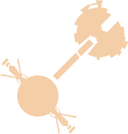

My Games
The games I wrote at school...
Millport Camp
| C#, Unity
May 2024 - August 2024
 Millport Camp is a single-player, open-world, third-person zombie shooter game.
Millport Camp is a single-player, open-world, third-person zombie shooter game.
Description
You are Harley, just on your way to meet up with your friend in the north in a zombie apocalypse.
Who knows what will happen?
Highlights
Features
- The 3Cs: characters – player and vehicles, cameras, controls.
- Basic gameplay: zombies, combat robots, guns, crafting, building, quests.
- Essential UIs: HUD, pause menu, inventory.
- A procedurally generated open-world level with biomes, roads, and the NPC AIs.
- An Entity-Component (EC) architecture for game objects.
- Various game/design patterns for gameplay features and UI: game loop, observer, singleton, flyweight, prototype, and MVP (Model, View, and Presenter).
- A simple yet functional finite state machine (HFSM) for AI behaviors.
- A procedural level generator using Perlin noises, offset grids, and A*.
Links
- Download Millport.Camp.Windows.zip
- Project Millport Camp
- Paper Millport Camp: Developing an Open-World Zombie Shooter Game with Unity
Dead Island
| C#, Unity
March 2024 - April 2024
 Dead Island is an interactive agents and procedural generation demo game.
Dead Island is an interactive agents and procedural generation demo game.
Description
A squad of AI survivors tries to navigate through some ocean islands populated with wandering AI zombies
to reach a safe zone.
Highlights
AI agents operate using behavior trees (BTs) powered by NPBehave, with squad coordination among
survivors inspired by Days Gone. Islands are procedurally generated with binary space
partitioning and cellular automata.
Links
Play Dead Island
Project Dead Island

Home >
Timber Hearth (14 km)